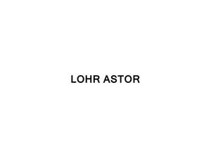
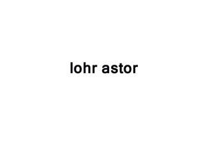
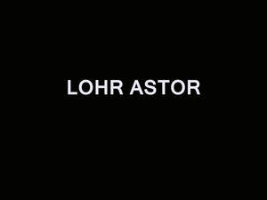

Trade Mark Journal No.2025/033 15 August 2025
UK00004239140 24 July 2025 (4,8,9,16,18,20,21,24,25,27,28)
Mark 1

Mark 2

Mark 3

Mark 4
Mark 5
Mark 6
- Class 4
- Candles; Tealight candles; Fragranced candles; Perfumed candles.
- Class 8
- Cutlery; Disposable tableware [cutlery] made of plastics; Silverware [cutlery, forks and spoons]; Table cutlery [knives, forks and spoons].
- Class 9
- Fashion sunglasses; Fashion eyeglasses; Fashion spectacles.
- Class 16
- Photographic albums; Scrapbook albums; Photo albums; Postcards; Gift books; Wrapping paper; Gift wrapping paper; Decorative wrapping paper; Lining papers for wrapping; Paper bags; Paper stationery; Paper serviettes; Paper bunting; Paper containers; Paper boxes; Paper gift boxes; Paper tags; Luggage tags of paper; Paper labels; Paper banners; Paper folders; Napkins of paper; Envelope paper; Postcard paper; Gift cards; Invitation cards; Greeting cards; Announcement cards [stationery]; Index cards [stationery]; Paper weights; Art prints; Graphic art prints; Fine art prints.
- Class 18
- Hand bags; Duffel bags; Luggage, bags, wallets and other carriers; Grocery tote bags; Diaper bags; Tote bags; Toilet bags; Sports packs; Sports bags.
- Class 20
- Decorative mirrors; Mirrors; Picture frames; Picture and photograph frames; Bed frames; Decorative plastic boxes; Decorative wood boxes; Decorative baskets made of wicker; Covers for clothing [wardrobe]; Clothes hangers, clothes stands [furniture] and clothes hooks; Bassinettes.
- Class 21
- Bone china tableware [other than cutlery]; Dinnerware of porcelain; Statues of porcelain, ceramic, earthenware, terra-cotta or glass; Figurines made of bone china; Boxes of porcelain; Chinaware; Glass tableware; Jewelry dishes; Napkin holders; Tealight holders; Serving dishes; Soap dishes; Salad bowls; Tea cups; Tea services [tableware]; Coffee pots; Cooking pot sets; Coffee cups; Vases; Goblets; Pots (Flower -); Statues, figurines, plaques and works of art, made of materials such as porcelain, terra-cotta or glass, included in the class; Valet trays [receptacles for small objects] for household purposes; Ornaments [statues] made of porcelain; Serving spoons; Serving utensils [pastry servers]; Serving forks; Serving scoops [household or kitchen utensil]; Serving ladles; Serving platters of precious metal; Serving trays made of rattan; Oven-to-table tableware; Serving trays, not of precious metal; Tableware; Kitchen utensils; Ice buckets; Coolers [ice pails]; Candle holders; Boxes of china; Decorative boxes of glass; China ornaments; Decorative porcelain ware; Decorative chinaware; Boxes of ceramics; Ceramic coin boxes; Piggy banks; Coin banks; Tissue box covers; Paper plates; Paper cups; Cups of paper or plastic.
- Class 24
- Table cloths; Table cloths of textile; Table linen; Bed clothes; Cloths; Bed clothes and blankets; Fabric table toppers; Table mats, not of paper; Face cloths; Textiles; Textiles for furnishings; Textile fabrics; Textiles for upholstery; Tapestries of textile; Cloth napkins; Bathroom towels; Bath linen; Chair covers; Cushion covers; Seat covers [loose] for furniture; Valanced bed covers; Bed linen; Bed quilts; Quilts of towel; Fabrics; Textile piece goods for clothing; Apparel fabrics.
- Class 25
- Clothing; Fashion hats; Clothing for sports; Leather clothing; Headbands [clothing]; Visors [clothing]; Kerchiefs [clothing]; Veils [clothing]; Belts [clothing]; Ready-to-wear clothing.
- Class 27
- Mats.
- Class 28
- Sports equipment; Yoga straps; Yoga blocks; Trolley bags for golf equipment; Appliances for gymnastics; Golf bags; Golf tees; Gloves (Golf -); Gloves for golf; Golf balls; Tennis racquets; Tennis balls; Christmas tree decorations; Christmas tree ornaments; Board games; Games; Backgammon games; Chess games; Cards [games]; Dice games.
Lohralee Astor Interiors Limited